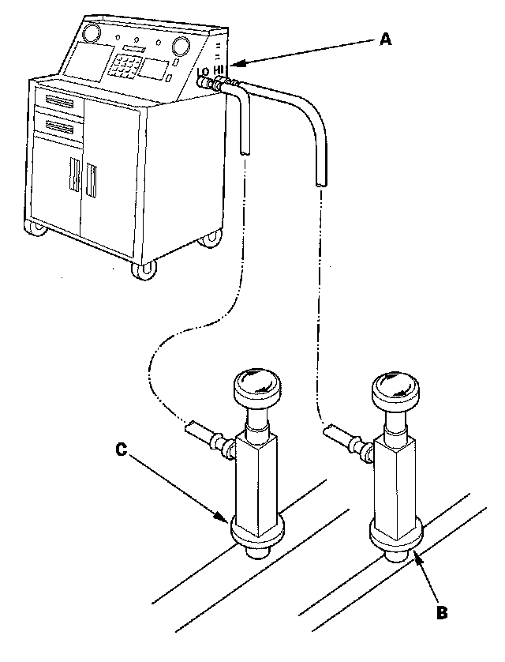

Refrigerant Recovery
Refrigerant RecoveryCAUTION:
- Air conditioning refrigerant or lubricant vapor can irritate your eyes, nose, or throat.
- Be careful when connecting service equipment.
- Do not breathe refrigerant or vapor.
NOTE:
- If accidental system discharge occurs, ventilate the work area before resuming service.
- Additional health and safety information may be obtained from the refrigerant and lubricant manufacturers.

1. Connect an R-134a refrigerant recovery/recycling/ charging station (A) to the high-pressure service port (B) and the low-pressure service port (C), as shown, following the equipment manufacturer's instructions.
2. Measure the amount of refrigerant oil removed from the A/C system after the recovery process is completed. Be sure to put the same amount of new refrigerant oil back into the A/C system before charging.